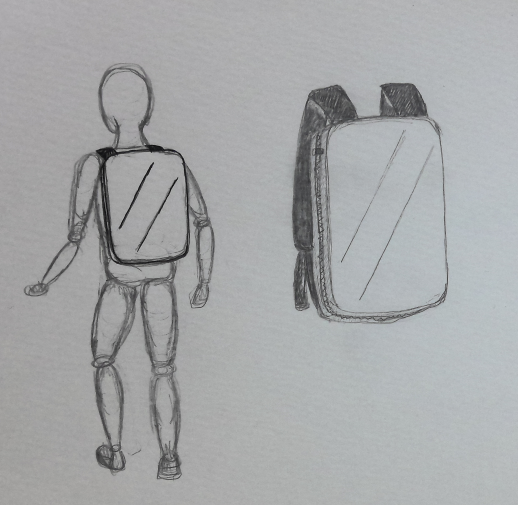

スーツケース型リュック

(2022.11.08 はまみらいウォーク)
通学中に前を歩いていた会社員の方がスーツケース型のリュックを背負っていた。
デザインは小さいスーツケースをそのまま背負っているかのようなデザインで、
今まで見たことが無かったのでスケッチした。
(側面にチャックがありスーツケースにあるような鍵がついていた。表面のデザインは曖昧)
特別容量が大きいようには見えず、素材も固く柔軟性がないため、
個人的に使い勝手が良いようには見えなかった。
そのため、使用している人がなぜそのリュックを選んだのか気になった。